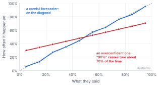
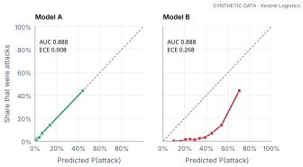
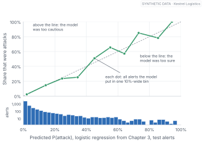
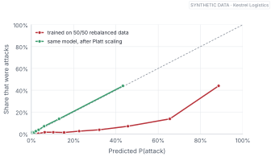
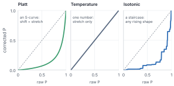
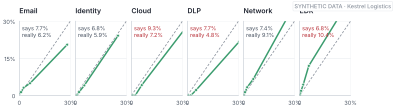

When you can measure what you are speaking about, and express it in numbers, you know something about it.
— Lord Kelvin, lecture on electrical units of measurement, 1883
Here’s a question that sounds silly until it costs you money:
“If a model says 80%, does that mean 80%?”
Your instinct is probably “obviously”. It’s a probability. That’s what the number is for.
But a number is just a number. A model can say 0.8 about alerts that turn out to be attacks half the time, or nineteen times out of twenty. Nothing in the maths of the model forces its 0.8 to line up with reality. It lines up only if we built it well, trained it on the right data and checked, and even then it can drift.
This chapter is about checking. It’s the single most important habit in the book. Every threshold in Chapter 4, every policy in Chapter 14 and every claim about Jev in Part III rests on it.
By the end of this chapter
Say what it means for a model to be calibrated, and why that’s different from being accurate.
Draw and read a reliability diagram, and compute the expected calibration error (ECE).
Recognise the everyday mistakes that break calibration, including rebalancing your training data.
Fix a miscalibrated model with Platt scaling, temperature scaling or isotonic regression, and know which to use.
Check calibration within the groups you’ll actually act on.
3.1 The weather forecaster’s secret
Let’s go back to the weather.
People love to complain about forecasters. But in the 1970s, when researchers checked American weather forecasters’ chance-of-rain forecasts against what actually happened, they found something remarkable. When the forecasters said “30% chance of rain”, it rained on roughly 30% of those days. When they said 70%, it rained roughly 70% of the time. Across the whole range, what they said and what happened lined up almost perfectly (Murphy and Winkler 1977).
Compare that with how people usually do. Ask someone to give a range they’re “90% sure” contains the answer to a trivia question, and the truth lands inside far less often than 90% of the time. We are, as a species, reliably too sure of ourselves.

Figure 3.1: Two forecasters. For each thing they said (“30%”, “70%” and so on), we count how often it actually happened. The careful forecaster sits on the diagonal: their 70% happens about 70% of the time. The overconfident one says 90% about things that happen only about 70% of the time.
What makes the weather forecasters good isn’t that they’re always right. They can’t be. It’s that their numbers mean what they say. That property has a name.
A model is calibrated when its 80% happens about 80% of the time.
And, importantly, calibration is something you can check, with nothing more than grouping and counting. You collect everything the model said “about 80%” to, and count how often it happened.
3.2 Good at ranking, bad at honesty
Before we check anything, one idea needs to land, because people confuse it constantly.
There are two separate things you might want from a model’s probabilities.
The first is ranking: does the model give attacks higher numbers than harmless alerts? If you sort alerts by the model’s score, do the real attacks rise to the top? That’s what the AUC measures, the number you’ve seen in a few tables already. An AUC of 1 means every attack scored above every harmless alert. An AUC of 0.5 means the scores are no better than a coin flip.
The second is honesty: when the model says 0.3, do three in ten of those alerts turn out to be attacks? That’s calibration.
The two are independent. A model can rank perfectly and still lie about how sure it is.

Figure 3.2: Two models, identical at ranking (same AUC) but not at honesty. Model A is the logistic regression from Chapter 2. Model B is the same model with its probabilities distorted: it still sorts the alerts in exactly the same order, but its numbers no longer mean anything.
Figure fig-same-auc shows two models with exactly the same AUC, 0.888. Model B’s numbers are a mess: it says 40% about alerts that are attacks only a few percent of the time. If you only ever sort alerts, Model B is as good as Model A. The moment you put a threshold on its numbers, or add them into a cost, or show them to an analyst, it’ll mislead you.
That’s the trap: most leaderboards and most model comparisons report ranking metrics like AUC, accuracy or F1. Calibration is often not measured at all. For a decision system it’s usually the thing that matters most.
3.3 The reliability diagram
So how do we check? Exactly the way the weather researchers did.
Take a pile of predictions where you know what happened: our test alerts from Chapter 2.
Sort them into bins by what the model said: 0–10%, 10–20% and so on.
In each bin, compare two numbers: the model’s average prediction and the share of alerts that really were attacks.
Plot one against the other.
That plot is called a reliability diagram, and you’ll see a lot of them from here on.

Figure 3.3: The reliability diagram of our Chapter 2 model on alerts it never saw. Points on the dashed diagonal mean the model’s numbers are honest. Underneath, a histogram (log scale) shows how many alerts fall in each part of the range: most sit near zero, and only a handful above 50%.
Look at Figure fig-anatomy-03 carefully, top and bottom together, because the bottom panel is the one people forget. Our model’s points sit near the diagonal where there’s lots of data. Up at the right end, the dots jump around, and the histogram tells you why: only a few dozen alerts live up there. A wobbly dot with twelve alerts behind it is weak evidence, as Chapter 2 warned. Always look at the counts before you panic, or relax.
Try it
Build the diagram’s table yourself: bin, average prediction, observed rate, count.
Pictures are the best way to see calibration, but sometimes you need a single number, to compare models or to raise an alarm when it drifts. The most common is the expected calibration error, ECE: the average gap between “said” and “happened” across the bins, weighted by how many predictions each bin holds (Naeini et al. 2015).
print(f"ECE: {cal.ece(p, y):.4f}")
ECE: 0.0077
Our logistic regression’s ECE is 0.008, meaning that on average, its probabilities are off by less than one percentage point. That’s good. Model B’s is 0.27.
ECE has weaknesses worth knowing. It depends on how you choose the bins. And because it’s an average, a model can hide terrible calibration in a small region, such as the high end where the dangerous alerts live, behind excellent calibration where most of the data sits. Report it, but always look at the picture too.
Going deeper
The Brier score from Chapter 2 splits neatly into three parts, a result due to Allan Murphy (Murphy 1973): Brier = reliability − resolution + uncertainty. Uncertainty is how hard the problem is to begin with (it depends only on the base rate).
Resolution is how much the model’s predictions separate cases that turn out differently, which is roughly the ranking skill. Reliability is the calibration error: the squared gap between said and happened, bin by bin. For our model: reliability 0.0005, resolution 0.0212, uncertainty 0.0698. A model can improve its Brier score by getting better at ranking, or by getting more honest, and the decomposition tells you which.
3.4 How calibration breaks
If log loss rewards honesty, as Chapter 2 said, why would a model ever come out miscalibrated? Because the training setup can quietly lie to it. Here are the usual suspects.
Rebalancing the data. This is one of the most common, and it’s usually done with the best intentions. Attacks are rare, only 8% of alerts, so someone decides the model needs to “see more attacks” and trains it on a 50/50 mix: every attack, plus an equal number of randomly chosen harmless alerts. The ranking survives. But the model has learned from a world where attacks are common, and it faithfully reports probabilities for that world.

Figure 3.4: A model trained on 50/50 rebalanced data (red) thinks attacks are about ten times more common than they are, and its probabilities sit far below the diagonal. After Platt scaling fitted on a separate calibration set (green), the same model is honest again.
The rebalanced model’s average prediction is 29%. The real attack rate is 8%. Put a threshold on those numbers and you’ll drown your analysts.
Overfitting. Flexible models that memorise, like the deep decision tree from Chapter 2, push their probabilities towards 0 and 1, because on the training data they really were that sure. They come out overconfident on new data.
Scores that were never probabilities. Some models output a “score” that happens to fall between 0 and 1 but was never trained with a proper scoring rule. Treat it as a ranking until you’ve checked it.
Big modern networks. Surprisingly, very large neural networks trained for classification tend to be overconfident(Guo et al. 2017). Chapter 5 looks at why. And the “confidence” an LLM states in words is a different animal again. Chapter 6 measures it.
The world changing. A model calibrated on last month’s base rate is miscalibrated the day a campaign doubles the number of attacks. Chapter 14 will watch it happen.
3.5 Fixing it
Here’s the good news: a model with good ranking and bad calibration is usually easy to fix. You don’t retrain it. You put a small correction on top.
The recipe is always the same. Hold back a calibration set, data the model never trained on. That’s the 20% we set aside in Chapter 2. Run the model on it, and learn a simple function that maps the model’s raw probabilities to honest ones. Then check the result on the test set, which neither the model nor the correction has seen.
There are three common corrections, and they differ in how flexible they are.

Figure 3.5: The three corrections, each fitted to the rebalanced model on the calibration set. Platt scaling learns an S-curve that can shift and stretch. Temperature scaling learns one number that only stretches around the middle, and here it barely changes anything. Isotonic regression learns any rising staircase.
Platt scaling fits a tiny logistic regression on top of the model’s log-odds: two numbers, a stretch and a shift (Platt 1999). It’s the one I’d reach for first.
Temperature scaling fits just one number, T, and divides the log-odds by it (Guo et al. 2017). T above 1 softens overconfident predictions; below 1 sharpens timid ones. It’s the standard fix for overconfident neural networks, and it’s what people usually mean when they talk about calibrating an LLM classifier.
Isotonic regression fits a staircase that only ever goes up (Zadrozny and Elkan 2002). It can fix almost any shape, but it needs more data and can overfit a small calibration set.
Platt and isotonic fix the rebalanced model almost completely. Temperature scaling doesn’t help at all, and the reason teaches you something. Rebalancing didn’t make the model overconfident. It shifted every prediction upwards, as if attacks were common. A temperature can only stretch or squeeze predictions around 0.5. It can’t slide them all down. Platt can, because it has a shift as well as a stretch.
Temperature fixes overconfidence. It can’t fix a wrong base rate.
3.6 Honest on average, dishonest in the corner
One more trap, and it’s the one that bites in production.
A model can be well calibrated overall and badly calibrated for a particular group. Here’s a version of our model trained without knowing which detection rule fired, so it can’t tell an email alert from an endpoint one.

Figure 3.6: Calibration checked separately for each alert source. Across all sources together, this model is honest, with an ECE of about half a percentage point. But it overestimates the risk of DLP and Cloud alerts and underestimates EDR alerts, which are genuinely more dangerous here. Averaging hides both mistakes.
Its overall ECE is excellent, 0.005. Yet for endpoint (EDR) alerts it says 6.8% when the truth is 10.4%, and for DLP alerts it says 7.7% when the truth is 4.8%. The over- and under-estimates cancel out in the average.
If your policy treats every source the same way, you’ll send too many harmless DLP alerts to the queue and close too many real EDR ones. The rule is simple: check calibration inside every group you’ll act on differently, and inside every group where a mistake would be especially costly. Sources, customer tiers, languages, regions, and yes, demographic groups when a model touches people’s lives.
Set the threshold
Kestrel auto-closes any alert under 3%. The model above says EDR alerts average 6.8% risk, but they’re really 10.4%. Roughly how much more often than planned will a real EDR threat be auto-closed? What are two different ways to fix this: one that changes the model, and one that changes only the policy?
(About half as often again. You could add the source as a feature, or calibrate separately per source, so the model’s numbers become honest. Or you could keep the model and set a stricter act line for EDR alerts. The first is better; the second is quicker.)
Where this breaks
Calibration is always measured on some data, and it’s only guaranteed for data like that. A model calibrated on last quarter’s alerts can drift as tools, attackers and staff change. Isotonic regression fitted on a few hundred examples will overfit and produce jagged, overconfident corrections. And calibration says nothing about any single prediction: a perfectly calibrated 70% is still wrong three times in ten. Keep a fresh calibration set, refit on a schedule, and keep watching the diagram.
The first principle is that you must not fool yourself, and you are the easiest person to fool.
— Richard Feynman, Cargo Cult Science, 1974
3.7 Where we are
The weather forecasters showed us that honesty is checkable. Then two models with the same ranking and very different honesty showed us why checking matters. Grouping and counting gave us the reliability diagram, and a well-meant rebalancing broke it. A small correction fitted on held-out data put it back. And just when the average looked fine, the EDR alerts reminded us to look inside every group we’ll act on.
When Part III tests Jev’s own calibration, it’ll use exactly these tools, pointed at the mock, with everything in this chapter as the yardstick.
Explain to a colleague, without jargon, the difference between a model that ranks well and a model that’s calibrated. Use a weather example.
In the lab, train the rebalanced model with a 30/70 mix instead of 50/50. Is it more or less miscalibrated? Predict the answer before you run it.
Why must the calibration correction be fitted on a separate calibration set, not on the training set? What would go wrong?
Fit isotonic regression using only 200 alerts from the calibration set. Plot its staircase. What do you notice, and what does that tell you about when to prefer Platt?
Name three groups in a system you know where calibration might differ, and one decision in each that would go wrong if it did.
Next: we finally have probabilities we can trust. Chapter 4 turns them into actions: what each mistake costs, where the lines go, and how to see the whole trade-off on one page.
Guo, Chuan, Geoff Pleiss, Yu Sun, and Kilian Q. Weinberger. 2017. ‘On Calibration of Modern Neural Networks’. Proceedings of the 34th International Conference on Machine Learning (ICML).
Murphy, Allan H. 1973. ‘A New Vector Partition of the Probability Score’. Journal of Applied Meteorology 12 (4): 595–600.
Murphy, Allan H., and Robert L. Winkler. 1977. ‘Reliability of Subjective Probability Forecasts of Precipitation and Temperature’. Journal of the Royal Statistical Society, Series C (Applied Statistics) 26 (1): 41–47.
Naeini, Mahdi Pakdaman, Gregory F. Cooper, and Milos Hauskrecht. 2015. ‘Obtaining Well Calibrated Probabilities Using Bayesian Binning’. Proceedings of the AAAI Conference on Artificial Intelligence.
Platt, John C. 1999. ‘Probabilistic Outputs for Support Vector Machines and Comparisons to Regularized Likelihood Methods’. In Advances in Large Margin Classifiers. MIT Press.
Zadrozny, Bianca, and Charles Elkan. 2002. ‘Transforming Classifier Scores into Accurate Multiclass Probability Estimates’. Proceedings of the Eighth ACM SIGKDD International Conference on Knowledge Discovery and Data Mining, 694–99.